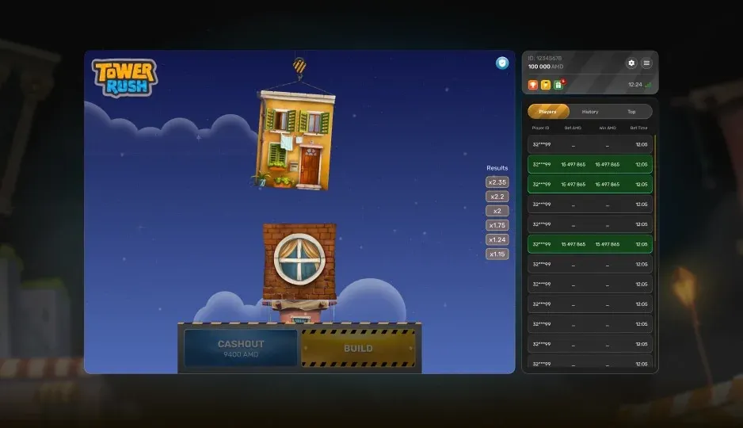

Strategy
How to Verify a Tower Rush Round: The Provably-Fair Check
Galaxsys publishes the seeds behind every round. Verifying one takes about two minutes and settles the only question worth asking about a crash game.
🔞 18+ only · Real-money gambling

Provably fair is a claim until you check it. Tower Rush exposes the seeds that generate each round, which means the outcome can be reproduced afterwards by anyone — including you, on your own machine, without trusting the operator.
What the system guarantees
Before a round, the server commits to a hashed seed. You supply a client seed. After the round, the server reveals its seed and you confirm that it hashes to the value published beforehand. If it does, the result could not have been changed once betting started.
What it does not guarantee
Not a fair price. The house edge is still there and is unaffected by verification.
Not operator honesty elsewhere. Payouts, bonus terms and withdrawals are separate questions.
Not your odds. Verification proves the round was not tampered with, nothing more.
The check, step by step
Step | Where | What you compare |
|---|---|---|
Copy the hashed server seed | Before the round | Store it yourself |
Set a client seed | Game settings | Any value you choose |
Reveal after the round | Round history | Hash it, compare with step one |
If the revealed seed does not hash to the value published before the round, stop playing on that operator and take screenshots.
When to bother
On a new operator, before depositing anything meaningful.
After a run of results that feels wrong — verify instead of guessing.
Whenever the site shows an RTP different from the one on the Galaxsys game page.
Never as a way to predict the next round. It cannot.
Operator checks beyond the seed are covered in the legitimacy guide.